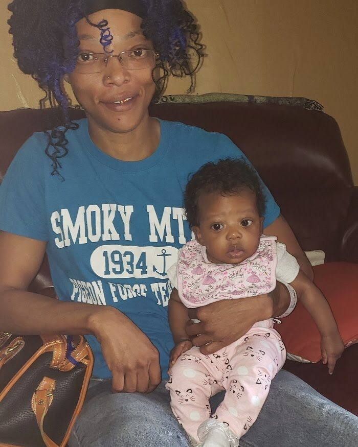
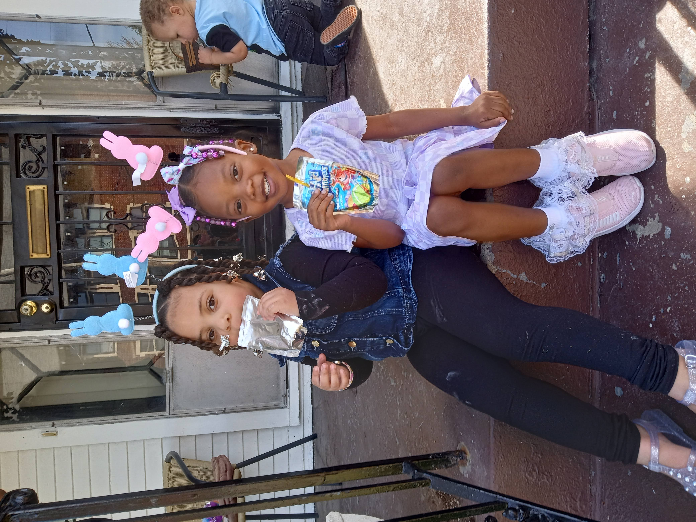
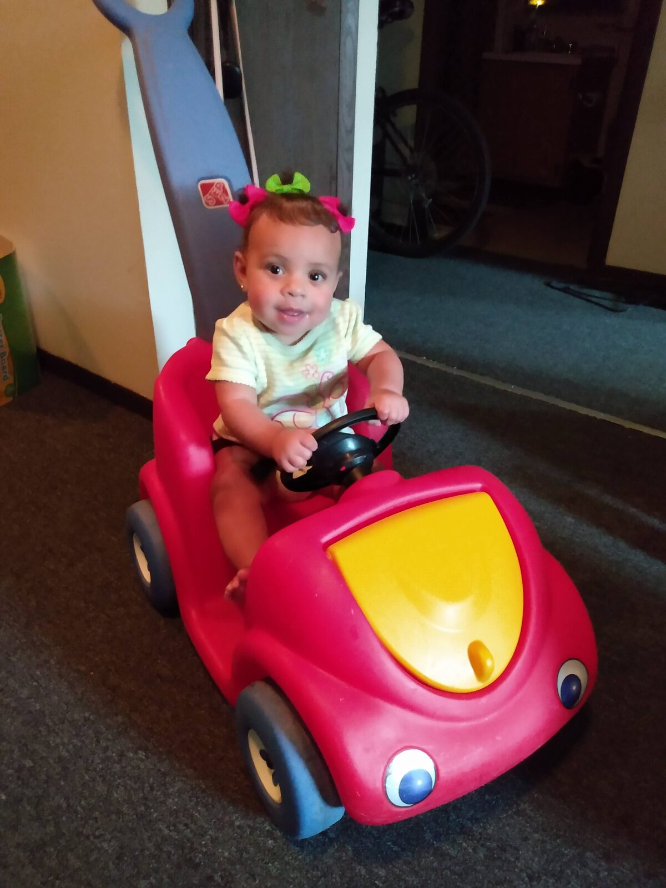
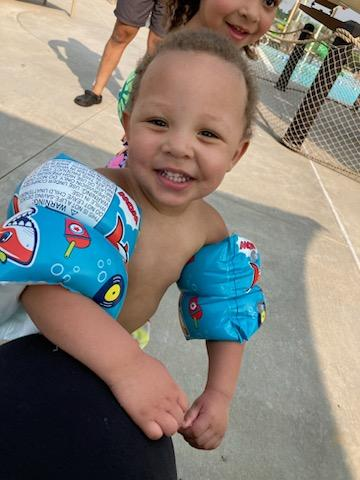
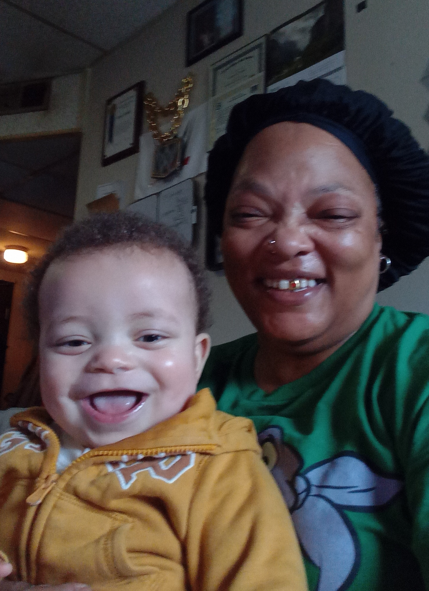

MiMi at 40
In the year of my 40th birthday, the 3rd generation of the Sun began to shine. Praise the Creator! I transitioned into an official adult life as a grandmother. I was no longer just MiMi to my step and god-children. It started in Jan 2019 with the birth of my first born grandchild from my middle son; a gorgeous smooth chocolate brown girl we call Acee (Aceiona). After a horrible previous year, filled with pain and rehabilitation, she honestly brought my year in with a much needed smile. I didn't mind walking halfway across the city from Churchill Downs to U of L Hospital in 40 minutes to see her as soon as she was born. I'll walk to Heaven for mines. And as the year 2019 came to an end, I was blessed again with the beautiful sun rising of my second grandchild form my youngest son. A bright golden girl called Alaina with eyes so big and bright they look like the sun. Grace and favor, given to me through the births of the girls I never had!



Since then I have been blessed 2 times more with the birth of 2 more grandchildren from my youngest son. 2 boys, Kane & Phoenix. My world is complete. Full of love and joy beyond my wildest dreams


Different Me's
At 45 years old, I now understand the unique characteristics of what I call the "Different Me's" in life, otherwise known as the roles in our lives, at different times in our lives, as we relate to others. That's a mouthful to say so I just call the many roles: "Different Me's". Everyone has at least 2 roles they will play in their lifetime, child and adult. If their lucky, some people will have dozens of roles throughout life however some will gravitate to negative influence therefore they take on roles of villainy. Whatever whatever. It's a personal choice.
My different me's were blessings each time they came around. Each one. I have had many roles, in many lives, with great reward! My different me's include daughter, sister, teen-mother, wife as well as cousin, aunt, & granddaughter. Me includes friend, godparent, stepmother too. I'm an animal parent, neighbor, coworker and Boss. Me is a mother to those who need mothering, teacher to those needing to learn as well as advocate to those who do not understand the complicated ways of life. There are "Me's" that are hidden inside closets but they are still me. The Survivor Me. The Fighter Me. These "Me's" are things may be stored away but they still contribute to "ME".
There are many more roles that I have had so far in my life. The best ones are the ones who provided the unconditional love such as mother/ stepmother/ godmother, friend, and wife. These roles provided me with so much more than reciprocated love. These "me's" gave me the opportunity to share my happiness with other people. My first friendship at age 5, laid the perfect foundation of what true friendship should be and I adhered to that blueprint of platonic love. That friendship laid the standards for what I knew and felt a real friend should be. Unselfish, supportive, and forever unconditional.
Regrets
Regrets? I have none. Period. I regret nothing that I've done because I know what I've done. Every secret, every truth...and I am okay with it. It's not that I've never done anything that I consider bad or wrong; I just that I accept all of my actions, choices, and consequences. That is, I accept what was mine to accept, my role in the event and just let the rest go. My load is heavy enough for me so I surely don't want yours. I have survived TOO much to be grudgeful and received TOO many blessings to block another's. Forgiveness is always available. Dying a little, twice, will prove that to you, I guess.